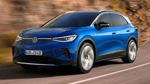
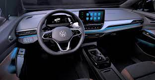

 
Електродвигун: Синхронний на постійних магнітах Потужність, кВт: 150 Максимальний крутний момент, Н*м: 310 Потужність, к.с.: 204 Кількість двигунів: Один Ємність батареї, кВт*год: 84.8 Тип батареї: Трикомпонентна літієва Запас ходу, км (2021/2022 р.в.): 550/600 Привід: Задній Маса автомобіля в спорядженому стані, кг: 2120 Об`єм багажного відділення, л: 543 Кліренс, мм: 210 Довжина / ширина / висота, мм: 4592/1852/1629 Колісна база, мм: 2765 Максимальна швидкість, км/год: 160 Час прискорення до 100 км/год, сек: 8.5 Країна виробництва: Китай.